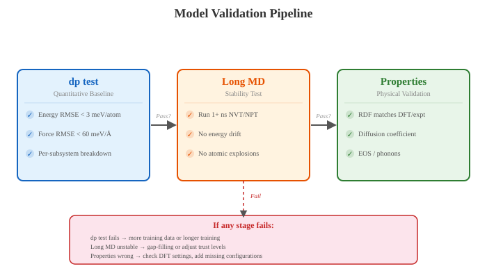
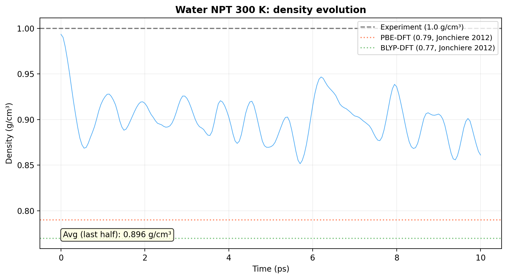
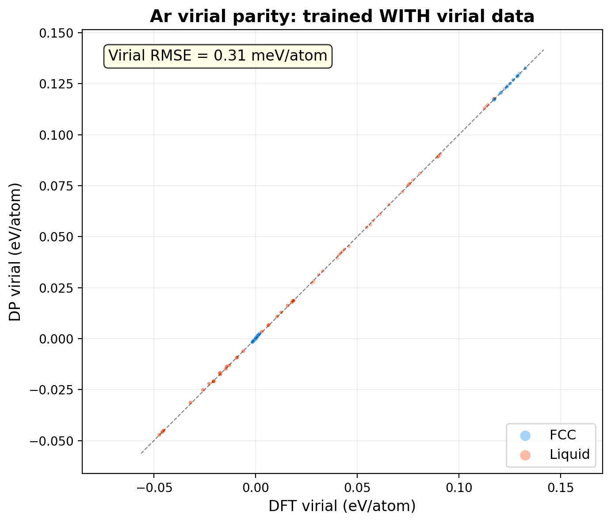
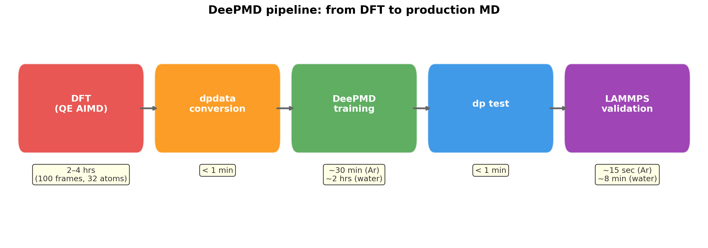

Ch 11: Validation & Production#
You trained the model. The dpgen loop converged. 98% of frames came back “accurate.” Model deviations flattened out. The loss curve is a textbook exponential decay. You are looking at those numbers thinking, “This is it. Time to run production and start writing.”
Stop.
I made this exact mistake. I saw 98% accurate and assumed convergence meant correctness. It does not. A converged dpgen loop means your four models agree with each other. That is the entirety of what it means. They could be agreeing on complete nonsense. Four students who studied the same bad textbook will all ace the same bad test. Low deviation. High confidence. Totally wrong.
This chapter is about answering the question that actually matters: did your model learn physics, or did it learn to agree with itself? You figure that out now, before you burn weeks of GPU time producing publishable garbage.
Why Validation Is Not Optional#
Here is what tripped me up. I saw that 98% accurate ratio and my brain immediately filed the project under “done.” Three weeks into production, a collaborator asked why the bond length was wrong. The model was confident. It was stable. It was wrong.
Model deviation measures agreement between four independently initialized networks. That is all it measures. If all four networks learned the same bias (because they trained on the same biased data), they will happily agree on the wrong answer. Low deviation. Zero alarm bells. And you are deep into production before the physics catches up with you.
This happens more often than anyone admits. And it happens for real, structural reasons:
Your training data has a systematic gap. All structures came from NVT at mild temperatures. No repulsive close-contact configurations. The model has never seen atoms pushed together, so it invents what happens there. Confidently.
Your DFT settings have a bug. Wrong pseudopotential. Missing vdW correction. Converged to the wrong electronic state. Every label in your training set is consistently wrong, and the model learned those wrong labels perfectly.
Your energy scales are mismatched (see Energy Scale Traps). The model nailed the slab and completely ignored the molecules.
The model found a shortcut. Some spurious correlation in the training data that predicts forces well enough on those specific frames but collapses on anything new.
Validation catches these. Production MD does not. Production MD just gives you more data from a model you never verified. That is not science. That is amplified guessing.
{kind=link}

Fig. 28 The three-stage validation pipeline. Start with dp test for quantitative RMSE benchmarks, then run long MD simulations to check stability, and finally validate physical properties (RDF, diffusion, EOS) against DFT or experiment. If any stage fails, the remedy depends on the failure mode.#
Step 1: dp test (The Report Card)#
First thing after training. Always. There is no good reason to skip this step.
dp test takes your frozen model, feeds it a held-out test set, and tells you how far off it is from DFT. Energy RMSE, force RMSE, virial RMSE. Three numbers. Your first reality check.
$ cd ~/deepmd_project/ar/02_test/
$ dp test -m ../01_train/frozen_model.pb -s ../00_data/validation/ar_fcc/ -n 500 -d results
# This produces:
# results.e.out - predicted vs. DFT energy per frame
# results.e_peratom.out - per-atom energy (more useful for comparison)
# results.f.out - predicted vs. DFT forces per atom per component
# results.v.out - predicted vs. DFT virial per frame (if available)
Here are the actual numbers from our tutorial models:
Metric |
Ar (FCC) |
Ar (Liquid) |
Water |
|---|---|---|---|
Energy RMSE/atom |
0.3 meV |
0.3 meV |
0.43 meV |
Force RMSE |
2.9 meV/Angstrom |
5.0 meV/Angstrom |
38.5 meV/Angstrom |
Virial RMSE/atom |
0.17 meV |
0.27 meV |
N/A (no virial) |
Check the numbers. Ar is excellent across the board. Water forces are ~10x larger, and that’s expected. Hydrogen atoms vibrate fast, feel strong intramolecular forces. 38.5 meV/Angstrom for a condensed-phase multi-element system with 320 training frames is solid.
What Numbers Are “Good Enough”?#
Everyone asks this. The honest answer: it depends entirely on what you are trying to measure. But you need a starting point, so here are rough benchmarks from the literature and from runs I have actually done:
Metric |
Excellent |
Good |
Acceptable |
Concerning |
|---|---|---|---|---|
Energy RMSE/atom |
< 1 meV |
1-3 meV |
3-5 meV |
> 5 meV |
Force RMSE |
< 30 meV/A |
30-60 meV/A |
60-100 meV/A |
> 100 meV/A |
Virial RMSE/atom |
< 5 meV |
5-15 meV |
15-30 meV |
> 30 meV |
Those numbers look clean on the page. In practice, they lie.
Key Insight
A 3 meV/atom energy RMSE is excellent for a bulk metal. It is terrible for a weakly bound physisorption system where the binding energy is 30-50 meV/molecule. If your error is 10% of the thing you are measuring, the model is useless for that measurement. The absolute number means nothing without context.
Always compare your RMSE to the energy scale of the physics you care about. A model with 5 meV/atom error studying a 2 eV reaction barrier? Perfectly fine. The same model studying a 30 meV adsorption energy? You are measuring noise.
Simulation
For a hands-on error analysis walkthrough using Python, see the CSI Princeton Workshop (Session 6). The notebook demonstrates programmatic model evaluation using deepmd.infer.DeepPot and dpdata.LabeledSystem, with parity plots and per-system error decomposition.
dp test on Subsystems: The Trap I Fell Into#
This is the part the docs skip.
We tested our Ar model on FCC and liquid separately. Look at the table above. FCC force RMSE: 2.9 meV/Angstrom. Liquid: 5.0 meV/Angstrom. If we had tested on “all Ar” combined, we’d get something around 4 meV/Angstrom. Not terrible, but the per-subsystem split shows the model is slightly weaker on the more disordered liquid phase. Actionable information that the aggregate hides.
This matters even more for multi-component systems. I ran dp test on a mixed graphene + H₂ dataset once. Got 40 meV/Angstrom overall. Seemed fine. Tested subsystems separately: graphene slab was 28 meV/Angstrom (great), but isolated H₂ gas was 350 meV/Angstrom (catastrophic). The slab frames (72 atoms each, hundreds of frames) completely swamped the H₂ frames (2 atoms, a few dozen frames). The aggregate number hid a disaster.
Test each subsystem independently:
$ cd ~/deepmd_project/ar/02_test/
# For Ar: test FCC and liquid separately
$ dp test -m ../01_train/frozen_model.pb -s ../00_data/validation/ar_fcc/ -n 10 -d test_fcc
$ dp test -m ../01_train/frozen_model.pb -s ../00_data/validation/ar_liquid/ -n 10 -d test_liquid
# For multi-component systems: test each system type
$ dp test -m ../01_train/frozen_model.pb -s test_data/slab/ -n 100 -d test_slab
$ dp test -m ../01_train/frozen_model.pb -s test_data/molecule/ -n 100 -d test_mol
Compare the numbers side by side. If one subsystem is 5-10x worse than the others, you found your problem. (See Energy Scale Traps for the full story on why multi-component energy scales cause trouble.)
So that is step 1. Test the model. Test it on each subsystem separately. Do not let an aggregate number hide a catastrophe.
Step 2: Long-MD Stability Test#
Your dp test numbers look good. The model knows its training data. Now the real question: can it survive dynamics?
A model can have beautiful RMSE on static test frames and then explode at step 50,000. Let me explain why, because this is important. MD is sequential. A small force error pushes an atom to a slightly wrong position. Next timestep, the atom is somewhere the model has never seen. The prediction gets worse. The position drifts further. The error compounds. Within a few thousand steps, you have atoms traveling at the speed of sound.
The model did not “crash.” It confidently predicted its way into physical absurdity, one timestep at a time. And the really insidious part? The energy might look fine at every individual step. The accumulated drift is invisible until the simulation is fully unhinged.
The test is dead simple. Run a long NVT simulation and see if it survives:
$ cd ~/deepmd_project/ar/03_lammps/
# Run a long NVT simulation and see if it survives
# 1 ns = 1,000 ps = 2,000,000 steps at 0.5 fs timestep
$ lmp -in stability_test.in
Your LAMMPS input should look something like:
units metal
atom_style atomic
read_data your_system.data
pair_style deepmd frozen_model.pb
pair_coeff * *
velocity all create 300.0 12345
fix 1 all nvt temp 300.0 300.0 0.1
timestep 0.0005
thermo 1000
thermo_style custom step temp pe ke etotal press
dump 1 all custom 10000 stability.dump id type x y z fx fy fz
run 2000000
Plain English: 2 million steps at 0.5 femtoseconds each. One nanosecond total. NVT at 300 K. Log thermodynamics every 1,000 steps, dump configurations every 10,000.
Now watch for four things:
Temperature explosion. Temperature should fluctuate around 300 K (the thermostat handles that). If it suddenly rockets to 10,000 K, the model broke. Check which step it happened. How long did it survive before losing its mind?
Energy drift. In NVE (not NVT), total energy should be roughly conserved. Drift below 1 meV/atom/ps is excellent. Above 10 meV/atom/ps is a red flag. The model’s potential energy surface is not smooth enough for energy conservation.
Structural integrity. Does the crystal stay crystalline? Do molecules stay intact? Do bond lengths stay physical? Dump configurations and look at them in OVITO or VMD. Your eyes catch things that metrics miss. I cannot stress this enough. Look at the trajectory. Actually look at it.
Ghost physics. Atoms overlapping. Bonds breaking at room temperature. If the model has never seen repulsive close contacts, it does not know those should cost a fortune in energy. Atoms walk right through each other like they are not even there.
HPC Reality
A 1 ns NVT simulation with a DeePMD potential on a 100-atom system takes maybe 30 minutes on a single GPU. That is nothing. There is no excuse to skip this.
Run at multiple temperatures: 77 K, 300 K, 500 K, and the extremes of your training range. If it survives at 300 K but detonates at 500 K, your high-temperature training data is thin. You know exactly what to fix.
How Long Should It Survive?#
If you need nanosecond-scale production runs, it needs to survive nanoseconds without going haywire. That is the bar. Simple.
If it survives 100 ps but dies at 200 ps, you have a time bomb. Not a model. It will produce “results” that are actually artifacts of a model slowly losing contact with reality. You will not know where the physics ends and the fiction begins.
For our Ar model, we ran 10 ps NVT at 50 K (solid) and 150 K (liquid). Both stable. Temperature fluctuates around the target, total energy is rock-steady. For our water model, NVT at 300 K ran 10 ps without issues. That’s a good sign, but for publication-quality work, you’d want much longer (100+ ps minimum, ideally 1 ns). The length matters because time bombs exist: models that look stable for 100 ps and explode at 200 ps. Specific. Actionable. That is what a good stability test gives you.
Step 3: Property Validation#
The model survives long MD. It did not blow up. But does it reproduce actual physics? Stability is necessary. It is not sufficient. A perfectly stable model that gets the C-C bond length wrong by 5% is worthless for studying graphene mechanics.
This is where you compare against known results. DFT-MD, experiment, literature values. The model needs to get the right answer, not just a stable one.
Radial Distribution Function (RDF)#
The RDF tells you about local structure. If the model gets the pair distributions right, the basic structural chemistry is correct. Get these wrong and nothing downstream matters.
Compare your ML-MD RDF against:
A short DFT-MD trajectory (10-20 ps is enough for an RDF)
Experimental pair distribution data if available
Three things to check:
Check |
What it means |
Red flag |
|---|---|---|
Peak positions |
Equilibrium bond lengths / distances |
Shifted by > 0.05 A from DFT; wrong geometry |
Peak heights |
Coordination environment |
Off by > 20% from DFT; distorted structure |
Peak widths |
Stiffness of potential well |
Sharper than DFT (too stiff) or broader (too soft) |
Our Ar model correctly produces sharp crystalline peaks for the FCC solid and broad liquid peaks at the expected nearest-neighbor distances (see Ch 5). Our water model reproduces the O-O first peak at ~2.7 Angstroms and the O-H hydrogen-bonding structure. If the peaks are in the right place, the right height, the right width, the local chemistry is solid.
Diffusion Coefficient#
For systems with mobile species (H2 on a surface, atoms in a liquid), compute the mean-squared displacement and extract the diffusion coefficient:
Compare against DFT-MD. ML-MD should reproduce DFT-MD diffusivity within the error bars of both calculations. If your ML-MD diffusion is 10x faster or slower, the potential energy surface has wrong barrier heights. 10x faster means the model is letting atoms hop too easily. 10x slower means it is trapping them too aggressively. Either way, the dynamics are wrong even if the statics look fine.
Equation of State (EOS)#
For bulk systems: compute the energy-volume curve. Compress and expand the cell, relax at each volume with the ML potential, compare against DFT.
# Pseudocode for EOS validation
import dpdata
import numpy as np
for scale in np.linspace(0.95, 1.05, 11):
# Scale the cell
# Run single-point with ML model
# Run single-point with DFT
# Compare energies
Equilibrium volume off by more than 1%? Bulk modulus off by more than 10%? The model needs more data in the compressed and expanded regimes. It learned the bottom of the well but not the walls.
Phonon Dispersion#
For crystalline systems, phonon dispersions are a brutal test. I am not exaggerating. Forces need to be accurate not just at equilibrium, but for every small displacement in every direction. Use phonopy with the DeePMD potential as the force calculator:
$ cd ~/deepmd_project/ar/02_test/
$ phonopy --deepmd ../01_train/frozen_model.pb -d --dim 3 3 1
# ... compute forces, extract phonon bands
Compare against DFT phonons. Acoustic branches should match within roughly 0.5 THz. Optical branches are harder; 1-2 THz errors are common and often acceptable. If you see imaginary frequencies where DFT gives real ones, the model thinks the structure is unstable when it is not. Bad sign. That means the curvature of the potential energy surface at equilibrium is wrong. The model might survive MD (because the thermostat compensates), but the underlying forces are incorrect in a way that will contaminate every derived property.
Key Insight
You do not need to validate every possible property. Pick the ones that matter for your scientific question:
Studying adsorption? Validate binding energies and adsorption geometries.
Studying diffusion? Validate MSD and diffusion barriers.
Studying mechanical properties? Validate elastic constants and phonons.
Studying phase transitions? Validate free energies (harder, but unavoidable).
A model that nails RDFs might completely botch reaction barriers. Validate what you plan to publish. Everything else is a distraction.
The “Hallucinated Stability” Problem#
Pay attention to this next part. This one keeps me up at night.
You train a model. Passes dp test. Survives 1 ns MD. RDF looks right. You run a long production simulation and observe something new. A phase transition. An adsorption geometry nobody expected. A new stable binding site. You get excited. You start writing the paper.
Then someone runs a DFT single-point on that structure, and it is 500 meV/atom higher in energy than your model predicted. The “stable” structure your model found does not exist. It never existed. Your model hallucinated it into existence. And the model was so confident about it that you almost published.
Here is what nobody tells you about neural network potentials. They are interpolators. Inside the training distribution, they are reliable. Outside it, they can predict anything. Anything. Including confidently wrong, smoothly connected, perfectly reasonable-looking potential energy surfaces that have no basis in reality whatsoever. The model does not know it left the training distribution. It has no concept of “I’m guessing now.” It just keeps predicting. Smoothly. Confidently. Wrongly.
The most dangerous case is not the obvious extrapolation where model deviation spikes. That is easy to catch. The dangerous case is when the model extrapolates to a region of configuration space that is adjacent to the training data. Close enough that model deviation stays low (all four models extrapolate the same way). Far enough that the energetics are garbage. The alarm system is silent because the four models agree. They agree on fiction.
Read that again. Seriously. Four models can agree perfectly and still be completely wrong.
How to Guard Against It#
Spot-check novel structures with DFT. Your ML-MD produces a structure you did not expect? Run a DFT single-point before you trust it. 30 minutes of compute. Could save you months of wasted publication effort. This is not a suggestion.
Monitor model deviation during production. Not just during dpgen. If you see deviation that slowly creeps up over the trajectory, the system is drifting into territory the model has never mapped. Do not ignore a slow climb. A slow climb means the model is gradually leaving its comfort zone, and at some point it crosses the line from interpolation to fiction.
Keep all 4 models after dpgen. Run production with one for speed, but periodically check deviation with all four. If it crosses
trust_hi, stop. Investigate. Do not keep collecting “data” from an unreliable model.Validate energetics of key structures. For adsorption studies: compute the ML binding energy curve and overlay the DFT curve. They should overlap. If they diverge at short distances or unusual geometries, those regions need more training data.
Warning: Hallucinated Stability
A neural network potential can predict a perfectly stable, perfectly smooth, perfectly wrong energy surface. Low model deviation does NOT mean the prediction is correct. It means the models agree. Four students can agree on the wrong answer.
The only ground truth is DFT (or experiment). Every novel prediction gets a sanity check. No exceptions.
When Is “Good Enough”?#
This is a judgment call. There is no universal threshold. It depends entirely on what you are trying to do. But here is the framework I use, and it has not steered me wrong.
For qualitative studies (trends, screening, mechanism identification):#
Criterion |
Target |
|---|---|
Energy RMSE/atom |
< 5 meV |
Force RMSE |
< 100 meV/A |
1 ns MD stability |
Required |
RDF matches DFT |
Required |
Novel structures spot-checked |
Required |
For quantitative studies (binding energies, barriers, diffusion coefficients):#
Criterion |
Target |
|---|---|
Energy RMSE/atom |
< 2 meV |
Force RMSE |
< 50 meV/A |
1 ns MD stability |
Required |
Property validation against DFT |
Required (the specific property you are publishing) |
Error bars from model committee |
Include in results |
For publication-quality results:#
All of the above, plus:
Run production with all 4 models independently and report the spread as uncertainty
Validate against experimental data where available
Show the
dp testparity plots (predicted vs. DFT) in the supplementaryReport the training data composition: how many frames, what systems, what temperatures
Reviewer 2 will ask about all of this. Have the answers ready.
Key Insight
The question is never “is this model perfect?” It is “is this model accurate enough for the specific number I am trying to compute?” A 5 meV/atom energy error is devastating if you are computing a 20 meV adsorption energy. It is irrelevant if you are computing a 2 eV reaction barrier.
Match your accuracy bar to your scientific question. Then validate the specific property you care about. Everything else is a distraction.
Going to Production#
Your model passed validation. Every stage. Here is the production checklist. Every item matters. I am not padding this list for appearances.
Freeze the model.
dp freeze -o production_model.pb. That is your artifact. The thing you cite. The thing Reviewer 2 asks about. Do not retrain after this point. Any results you publish trace back to this exact file.Document everything. The dpgen iteration that produced this model. The training data composition. The
dp testRMSEs on every subsystem. The validation results. The temperatures tested. The stability test duration. Future-you will need this when Reviewer 2 asks questions six months from now. (Future-you will also thank present-you. Trust me on this one.)Keep all 4 models. You run with one for speed. You periodically check deviation with all four. It is your early warning system during production. It costs nothing. It catches slow drift into uncharted configuration space before you have a month of bad data.
Set up production LAMMPS scripts. Equilibration (NVT/NPT for 100+ ps). Production (NVT/NVE, as long as needed). Thermo output. Dump files. Restart files. Standard MD workflow. Write it down so it is reproducible.
Monitor the first production run. Do not launch 50 jobs and walk away. Run one. Check the trajectory. Open it in OVITO. Verify the physics looks right. Then scale up. The 30 minutes you spend checking saves you the 3 days you would spend re-running everything when job number 47 reveals a problem that was there from the start.
That is your model. Frozen and ready.
NPT and the Virial Question#
Here’s a validation test that catches a subtle problem: run NPT and watch the density.
Our water model was trained without virial data (start_pref_v = 0, limit_pref_v = 0). The ICTP training data didn’t include stress tensors. The model is perfectly happy in NVT (fixed volume). But switch to NPT (constant pressure, volume can change), and the density drifts.
{kind=link}

Fig. 29 Water NPT at 300 K: density evolves over time. The experimental value is 1.0 g/cm³. DFT with PBE gives ~0.79 g/cm³ (Jonchiere et al., JCTC 2012), BLYP gives ~0.77. Our model, trained on PBE-level data without virial, shows the density drifting. This is expected. Without virial training, the model has no information about how energy changes with volume. It can’t predict pressure.#
This is not a bug. It’s a feature (of bad planning). If your DFT gives you stress tensors (tstress = .true. in QE), ALWAYS include virial in training. The cost is zero. The benefit is NPT.
{kind=link}

Fig. 30 Ar virial parity: DFT vs DeePMD virial per atom. The model was trained with virial data (start_pref_v = 0.02, limit_pref_v = 1.0), and it reproduces DFT stress tensors accurately. This is why this Ar model can run NPT reliably.#
Ar model |
Water model (ICTP) |
|
|---|---|---|
Virial weight |
|
|
Stress data in training? |
Yes |
No |
Can predict pressure? |
Yes |
No |
NPT reliable? |
Yes |
No (density drift) |
Rule |
If DFT gives stress, include virial. The cost is zero. The benefit is NPT. |
Key Insight
DFT water density is a known challenge. Even “perfect” DFT functionals get water density wrong. PBE: ~0.79 g/cm³. BLYP: ~0.77 g/cm³. The experimental value is 1.0 g/cm³. This is documented extensively:
Gillan, Alfè, Michaelides. “Perspective: How good is DFT for water?” J. Chem. Phys. 144, 130901 (2016). DOI: 10.1063/1.4944633
Jonchiere et al. “Structure and Dynamics of Liquid Water from AIMD…” JCTC (2012). DOI: 10.1021/ct200482z
Palos et al. “Elevating DFT to chemical accuracy…” Nature Commun. 12, 6359 (2021). DOI: 10.1038/s41467-021-27340-2
If your ML potential reproduces the DFT density perfectly, it’s doing its job. The density error is in the DFT, not the potential. Don’t chase experimental agreement by fixing the model. Fix the DFT (better functional, dispersion corrections) or accept the systematic error.
The Full Pipeline: What You Just Built#
Step back and look at what we covered across this tutorial.
{kind=link}

Fig. 31 The complete DeePMD pipeline with real wall times from our tutorial examples. From DFT calculation to production LAMMPS MD, the bottleneck is always DFT. Everything after dpdata conversion is fast. This is the whole point: invest once in DFT, reuse forever in ML-MD.#
Takeaway#
Validation is not a formality. It is not the boring part between the exciting training and the exciting production. It is the line between a model that produces science and a model that produces confident fiction.
Run dp test on each subsystem. Run long MD at multiple temperatures. Compute the specific properties you plan to publish. Spot-check every novel structure with DFT. Do all of this before you trust a single result. Every single result.
A converged dpgen loop means the model is self-consistent. Validation means the model is correct. One does not imply the other. Not even close.